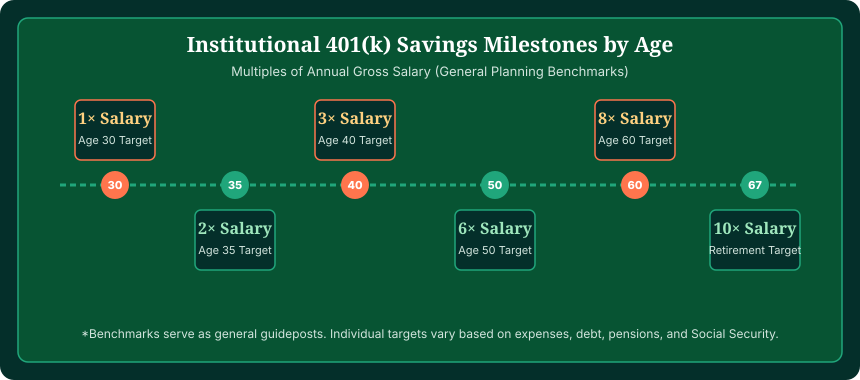
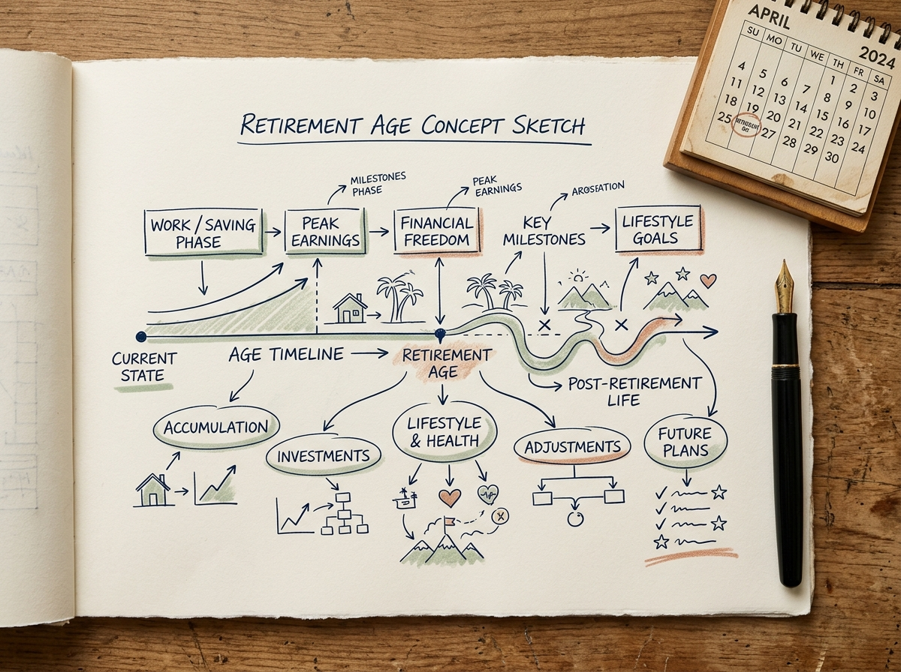
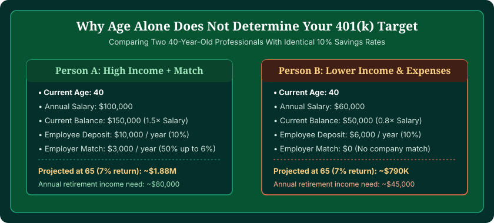

If you are wondering how much 401(k) by age you should have saved, the short answer is that institutional benchmarks suggest saving 1x your annual salary by age 30, 3x by age 40, 6x by age 50, and 10x by age 67. However, there is no single mandatory dollar amount that fits every saver. Because your target depends directly on your current balance, personal earnings, living expenses, and contribution rate, you should use our interactive 401(k) Calculator to project your personalized future retirement nest egg.
Retirement benchmarks published by investment firms like Fidelity, Vanguard, and T. Rowe Price are frequently cited across financial media. Yet seeing a flat table that says you need $300,000 by age 42 can feel either discouraging or disconnected from reality. Someone earning $45,000 per year in a low-cost region requires a completely different total nest egg than an executive earning $220,000 in a metropolitan area.
This comprehensive guide explains how salary multiples work across every decade, examines the difference between average and median 401(k) balances, explores why two people of the exact same age need different balances, and shows you how to turn age benchmarks into an actionable, stress-free savings strategy.
Project Your Real 401(k) Growth
Static age charts can't account for your actual salary, employer match, or years until retirement. Run your custom numbers through our verified engine.
Launch 401(k) Calculator →The Salary Multiples Framework: Common 401(k) Benchmarks by Age
The most widely respected retirement savings framework does not define goals in flat dollar amounts. Instead, it measures progress as a multiple of your gross annual salary. By linking your savings milestone to your earnings, the target automatically scales with your personal standard of living.
The baseline model developed by institutional retirement researchers assumes you plan to retire around age 65 to 67 and maintain roughly 70% to 80% of your pre-retirement income through a combination of personal retirement savings and Social Security benefits.
| Age Milestone | Recommended Benchmark | Example on $60,000 Salary | Example on $100,000 Salary | Primary Focus for Milestone |
|---|---|---|---|---|
| Age 30 | 1.0× Salary | $60,000 | $100,000 | Establishing savings habit & capturing employer match |
| Age 35 | 1.5× – 2.0× Salary | $90,000 – $120,000 | $150,000 – $200,000 | Compounding begins generating measurable returns |
| Age 40 | 3.0× Salary | $180,000 | $300,000 | Peak career accumulation phase begins |
| Age 45 | 4.0× Salary | $240,000 | $400,000 | Annual portfolio gains start rivaling fresh deposits |
| Age 50 | 6.0× Salary | $360,000 | $600,000 | Catch-up contributions become available |
| Age 55 | 7.0× – 8.0× Salary | $420,000 – $480,000 | $700,000 – $800,000 | Refining asset allocation & healthcare timeline |
| Age 60 | 8.0× – 9.0× Salary | $480,000 – $540,000 | $800,000 – $900,000 | Stress-testing sequence-of-returns risk |
| Age 67 | 10.0× Salary | $600,000 | $1,000,000 | Sustainable drawdown & distribution phase |

401(k) Milestones Broken Down by Decade
To make sense of these multiples, it helps to understand what is happening behind the scenes in your finances and in your portfolio during each phase of your working life.
In Your 20s: The Launchpad
In your twenties, the priority is not amassing a massive portfolio balance immediately; it is establishing the habit of systematic deduction and ensuring you never leave free money on the table. If your employer provides a match, depositing enough to capture the entire match should be treated as non-negotiable. Even small deposits of $150 to $300 per month have nearly four full decades to compound.
By Age 30: 1× Annual Salary
Reaching 1x your annual salary by age 30 is considered the gold standard benchmark. For someone earning $60,000 who started contributing at age 23, saving 10% to 15% (including match) with moderate market returns will typically produce approximately $60,000 by age 30. If student debt or career transitions prevented you from reaching this mark, don't despair—your highest earning years are still ahead.
By Age 40: 3× Annual Salary
By age 40, the power of compound interest begins to visibly show up in quarterly statements. If your salary has risen to $90,000, your 3x target is $270,000. At a standard 7% annualized return, a $270,000 portfolio generates nearly $19,000 in annual investment growth alone—meaning your portfolio is now generating more annual wealth than many people's baseline annual savings contributions.
By Age 50: 6× Annual Salary
Age 50 represents a major milestone in IRS rules. Once you turn 50, you are permitted to make annual catch-up contributions above the standard 401(k) elective deferral limit. If you have 6x your salary saved (e.g., $600,000 on a $100,000 salary), compound growth is doing the overwhelming heavy lifting. At 7% return, a $600,000 portfolio generates $42,000 per year in returns.
By Age 60 and Beyond: 8× to 10× Annual Salary
As you approach your target retirement age, preservation becomes as important as accumulation. Reaching 8x to 10x your salary provides the principal foundation needed to sustain the popular "4% withdrawal rule," generating approximately 40% of your pre-retirement income from savings, with Social Security bridging the remaining gap.

Average vs. Median 401(k) Balance by Age: What Real Americans Have Saved
When reading financial news, you will frequently see reports citing the "average 401(k) balance." However, in statistical analysis, averages can be deeply misleading. A few super-savers with multimillion-dollar balances pull the arithmetic mean upward, making typical workers feel far further behind than they actually are.
The median balance represents the true 50th percentile—meaning exactly half of account holders have more, and half have less. The following data from Vanguard's authoritative How America Saves research highlights this critical difference:
| Age Bracket | Vanguard Average Balance | Vanguard Median Balance | The Skew Factor |
|---|---|---|---|
| Under 25 | $7,351 | $2,348 | Average is 3.1× higher than median |
| Ages 25 – 34 | $37,557 | $14,933 | Average is 2.5× higher than median |
| Ages 35 – 44 | $91,281 | $35,321 | Average is 2.6× higher than median |
| Ages 45 – 54 | $168,646 | $60,763 | Average is 2.8× higher than median |
| Ages 55 – 64 | $247,205 | $87,571 | Average is 2.8× higher than median |
| Age 65 and Older | $272,588 | $88,488 | Average is 3.1× higher than median |
Notice that for workers in their late 40s and early 50s, the median balance is around $60,000, while the average is nearly $170,000. If your balance does not match the aggressive benchmarks shown earlier, you are far from alone. Millions of Americans carry balances close to the median figures.
Why Two People the Same Age Need Completely Different 401(k) Balances
The biggest flaw with static charts is the assumption that age is the only variable that matters. In reality, two people who are both 45 years old might have radically different target balances based on five critical factors:
- Expected Retirement Living Expenses: Retirement targets are driven by what you spend, not what you earn. Someone accustomed to living comfortably on $4,000 per month needs a fraction of the savings required by someone spending $12,000 per month.
- Guaranteed Income Sources: If one worker has a defined-benefit pension from a public sector career or military service, or anticipates a maximum Social Security benefit, their reliance on a 401(k) is significantly lower.
- Housing Debt Status: Entering retirement with a fully paid-off home reduces monthly baseline income needs by 30% to 45% compared to carrying a mortgage or renting.
- Target Retirement Age: Retiring at age 60 requires funding 25 to 35 years of living expenses before Medicare or full Social Security kicks in. Retiring at age 70 requires funding only 15 to 20 years.
- Asset Location (Roth vs. Traditional): A $500,000 Roth 401(k) is worth substantially more in actual purchasing power than a $500,000 Traditional 401(k), because every dollar of Roth withdrawals is 100% tax-free.

How to Calculate Your Own Personalized Retirement Number
Rather than relying on rules of thumb, you can determine your exact target using a three-step formula:
The 3-Step Target Formula
Step 1: Estimate Your Annual Retirement Spending
Take your current annual income and multiply by 0.75 (75% rule). For example, $80,000 × 0.75 = $60,000/year.
Step 2: Subtract Guaranteed Income
Estimate your expected Social Security benefit (e.g., $24,000/year). Your remaining savings gap is $60,000 − $24,000 = $36,000/year.
Step 3: Multiply by 25 (The Inverse 4% Rule)
$36,000 × 25 = $900,000. This is your personalized nest egg target at retirement.
Once you know your target dollar amount, you can test whether your current savings rate and timeline will get you there using our 401(k) Calculator. The calculator models annual salary increases, employer match formulas, investment return variability, and inflation adjustments.
What to Do If You Are Behind on Your 401(k) Benchmarks
If your current 401(k) balance is lower than the benchmarks for your age group, taking deliberate, measured action today can alter your trajectory dramatically:
- Capture Every Dollar of Employer Match: If your employer offers a 50% match on the first 6% you contribute, that represents an immediate, guaranteed 50% return on your money. Never contribute less than the matching threshold.
- Implement the "1% Escalation" Habit: Increase your contribution rate by just 1% of your salary each year, ideally whenever you receive an annual merit raise. If you earn $70,000, a 1% increase is just $58 per month, but over 20 years it adds tens of thousands of dollars to your nest egg.
- Leverage Age 50 Catch-Up Contributions: Under IRS guidelines, savers age 50 and older can contribute an extra $7,500 per year into their 401(k) beyond the standard elective limit ($23,000 for 2024 / $23,500 for 2025).
- Examine Investment Fees and Expense Ratios: Make sure your portfolio is invested in low-cost index funds or target-date funds with expense ratios under 0.15%. High fees (over 1%) can siphon off more than 20% of your lifetime gains.
- Delay Retirement by 1 to 2 Years: Working just two additional years provides a triple financial benefit: your portfolio continues to compound, you avoid withdrawing for two years, and your eventual Social Security benefit increases permanently.
Frequently Asked Questions
How much should I have in my 401(k) by age 30?
A standard retirement benchmark is to have approximately 1x your annual salary saved across your retirement accounts by age 30. For someone earning $60,000, that equals $60,000. However, starting salaries and student loans mean many savers are below this figure and catch up through compounding in their 30s.
How much should I have in my 401(k) by age 40?
Common institutional benchmarks suggest having approximately 3x your annual salary saved by age 40. On an $80,000 salary, this target is $240,000. At age 40, ongoing compound investment growth typically begins contributing as much to annual account growth as your fresh contributions.
How much should I have in my 401(k) by age 50?
Financial benchmarks suggest aiming for approximately 6x your annual salary by age 50. For an individual earning $90,000, that targets $540,000. At age 50, savers also become eligible for IRS catch-up contributions to accelerate their savings.
What is the average 401(k) balance by age?
According to annual data from major retirement custodians like Vanguard, average 401(k) balances range from approximately $16,000 in your 20s, $63,000 in your 30s, $135,000 in your 40s, $270,000 in your 50s, to over $310,000 in your 60s. However, averages are heavily skewed upward by top earners; median balances are considerably lower.
Why is the median 401(k) balance lower than the average?
The median represents the exact midpoint of all accounts (half have more, half have less). The average is pulled significantly higher by a small percentage of high earners who max out contributions for decades. The median provides a much more realistic picture of typical retirement savings.
What if I am behind on my 401(k) savings?
If your balance is below age benchmarks, you can close the gap by securing your full employer match, increasing contributions by 1% to 2% each year, utilizing IRS catch-up contributions once you reach age 50, and modeling your realistic retirement horizon with a 401(k) calculator.